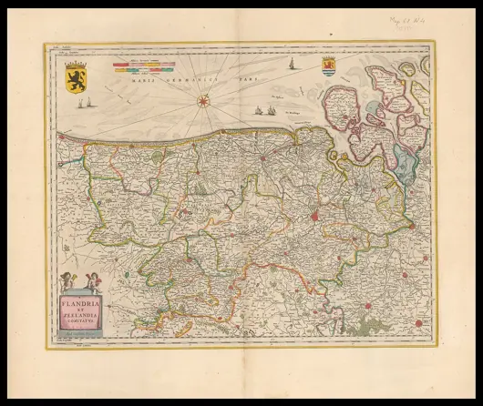
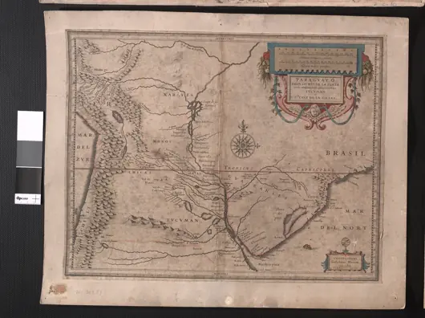

Um arquivo pessoal brasileiro
Entre Continentes,
Histórias e
Gerações.
Um arquivo pessoal de heranças, fé, história e interesses intelectuais.
Sou brasileiro e muçulmano. Este arquivo reúne as histórias que herdei, a fé que pratico e os temas aos quais sempre retorno.


Família e lugares
Raízes Familiares

Portuguesa açoriana
As ilhas atlânticas e as linhagens maternas de Desterro.

Galega
Memória familiar, língua e a fronteira no noroeste ibérico.

Germânica · Weber
O sobrenome Weber e a história das regiões de língua alemã.

Flamenga
Os Países Baixos históricos e a herança flamengo-germânica da família.

Minha Herança Charrua
Memória familiar e continuidade indígena no Rio da Prata.
Fé e estudo
O Islã e a
Biblioteca de Manuscritos
Identifico-me com a crença athari e procuro seguir os Salaf al-Ṣāliḥ. A biblioteca reúne as primeiras gerações, a erudição clássica e a história de como o conhecimento religioso foi preservado.

Pesquisa e interesses
Do Arquivo
Genealogia
Weber, ramos familiares e uma linha do tempo regional.
Genética de Populações
G25, DNA antigo e os limites da proximidade genética.
Interesses Históricos
Europa, Rio da Prata e o mundo islâmico clássico.
Línguas
Terminologia árabe, galego e línguas germânicas históricas.
Tecnologia
Uma web feita de arquivos, IA local e hardware.
Jogos e Cultura Digital
Counter-Strike 2 HvH, Far Cry 3 e a coleção.